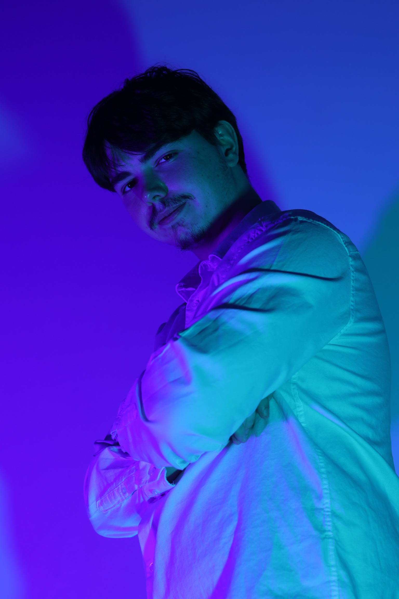
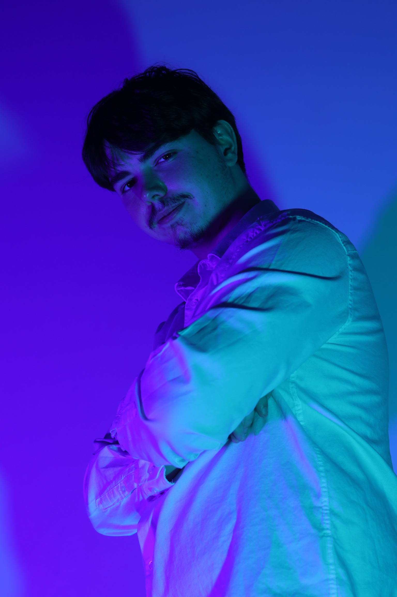

KuraKu
Branding d'un joueur e-sport
Contexte
KuraKu, joueur e-sport semi-professionnel, m'a confié la création de son identité visuelle. Entre branding personnel et éléments graphiques pour Twitch, ce projet vise à construire une image qui lui ressemble, cohérente et à la hauteur de ses ambitions.
Procéssus créatif
Identité Visuelle
Après plusieurs échanges avec KuraKu, j'ai pu prendre le temps d'analyser l'énergie qui le rendais unique. À partir de là, j'ai proposé une palette de couleurs inspirée de son univers, en lien avec ses influences variées : entre e-sport, pop culture et préférences personelles. L'objectif est de créer une identité visuelle cohérente qui lui ressemble, et reconnaissable parmi les autres sur toutes ses plateformes.
Séance photo
J'ai ensuite pris le temps de réaliser une série de photos pour capturer l'essence fidèle de KuraKu.
L'idée, c'était d'explorer plusieurs directions et de voir ce qui lui correspondait le mieux.
On a joué avec les lumières, les postures et les tenues : entre un look full e-sport affirmé et quelque chose de plus neutre et naturel.
(J'ai même pu lui refaire une photo pour son CV !)

 

Bannière et photo de profil
Après avoir discuté ensemble des visuels les plus représentatifs, j'ai retravaillé les 2 images sélectionnées, pour un rendu optimal sur les réseaux sociaux. Pour la photo de profil, j'ai ajusté la colorimétrie afin de respecter la cohérence avec l'identité visuelle définie en amont, articulée autour de teintes bleu et violet. Côté bannière, j'ai intégré une typographie qu'il affectionne particulièrement, participant à traduire visuellement son univers.

Logiciels utilisés

Photoshop

Lightroom
Twitch
En cours de création
La section Twitch est en préparation !